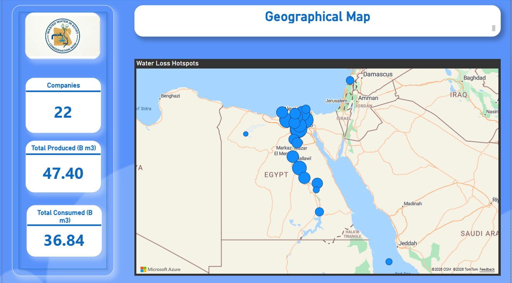
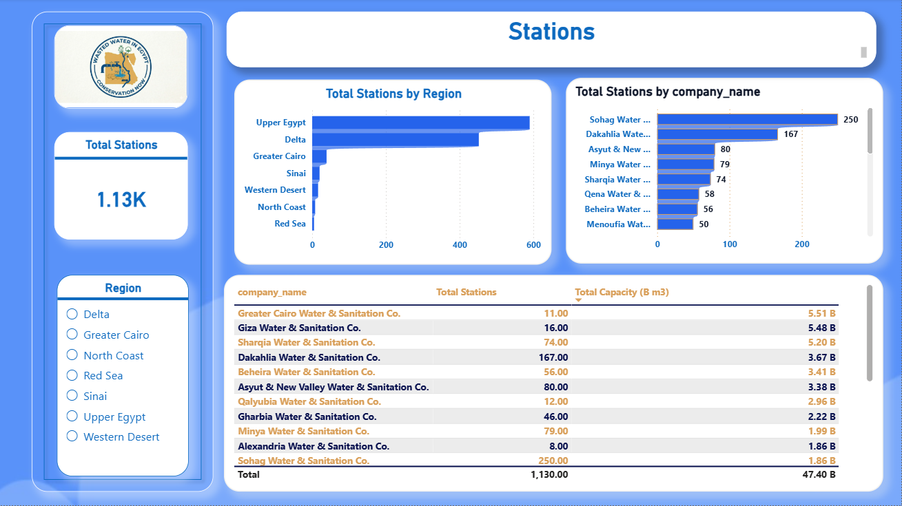
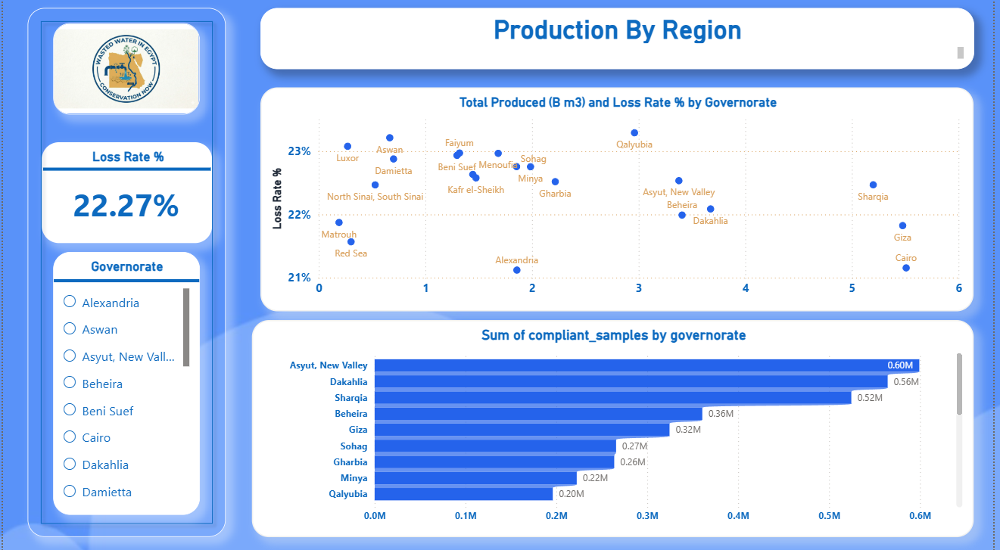
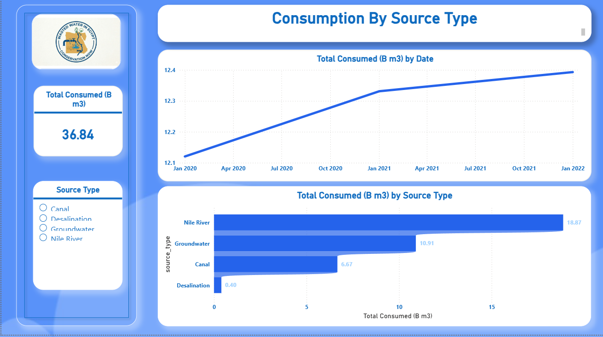
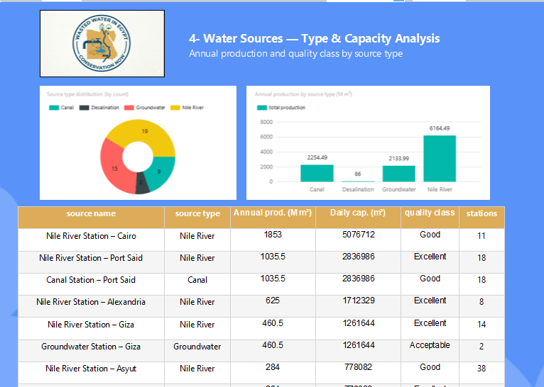
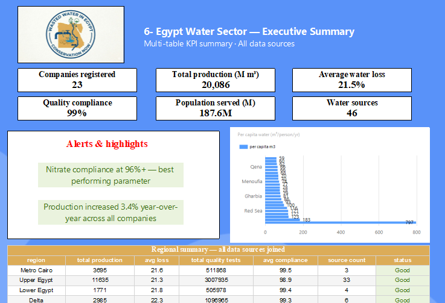
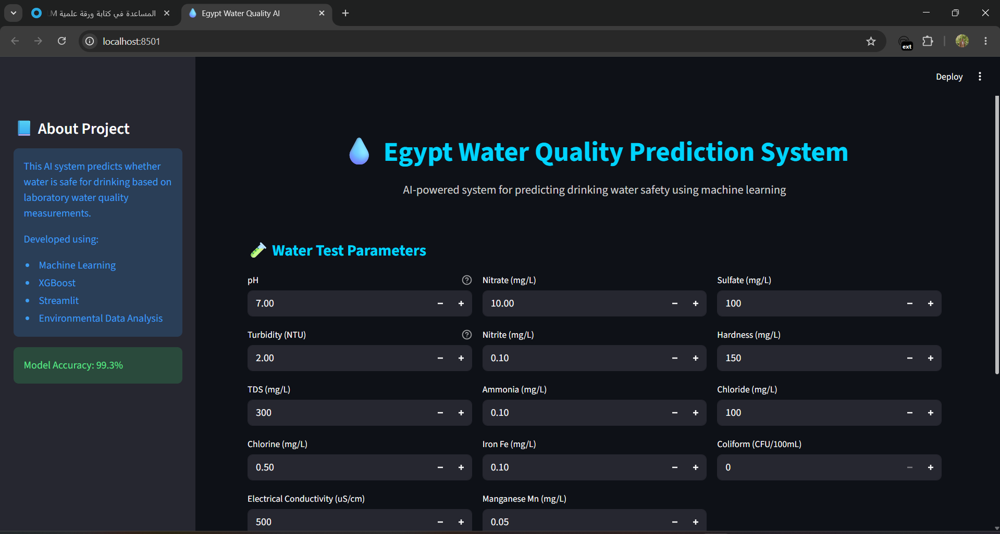
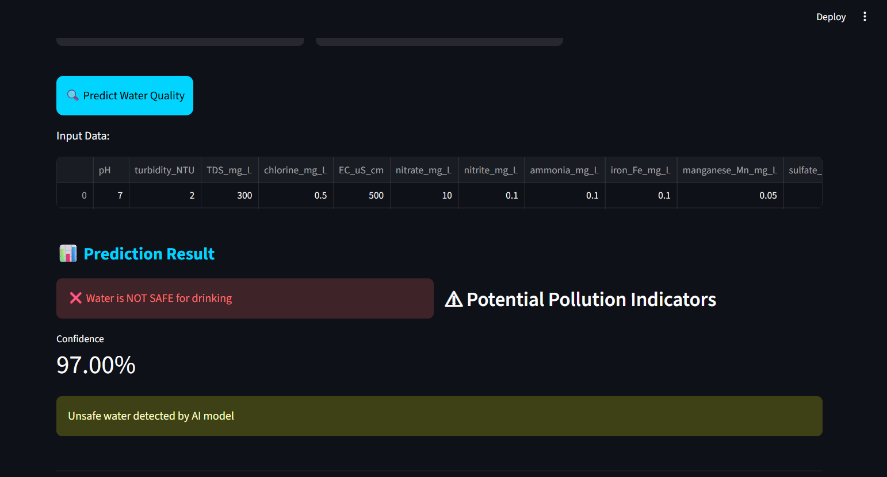

Egypt Water Quality Analysis & Prediction System
My ITI graduation project, built on real data from the Egyptian Water Company. It combines business intelligence, data engineering, and machine learning into one water quality monitoring solution.








1 / 8
Overview
A water quality monitoring system covering the full chain: a centralized SQL Server database feeding BI dashboards and reports, plus a machine learning model that predicts water safety from lab measurements.
What I Built
- SQL Server database: the centralized data source for all analytics.
- 20 Power BI dashboards: water quality, consumption, waste, companies, and governorates.
- 6 SSRS reports: operational KPIs across companies and usage metrics.
- Prediction model: a Random Forest with 96.3% accuracy that predicts water safety from 14 chemical parameters.
- GPT-powered chatbot: interactive consultation on water quality.
The Streamlit App
- Enter the 14 lab parameters and get an instant Safe / Unsafe prediction with a confidence score.
- See which pollution indicators exceed WHO thresholds.
- Chat with the assistant for detailed analysis, health risk explanations, and treatment recommendations.
Key Insights
- Water quality varies significantly across governorates, with Upper Egypt showing higher risk levels.
- Turbidity and Iron are the most frequent non-compliant parameters.
- Summer months show elevated bacterial contamination rates.
- Water waste averages about 30% across distribution networks, with notable regional differences.
Tools & Stack
SQL Server
Power BI
SSRS
Python (scikit-learn)
Streamlit
GPT chatbot